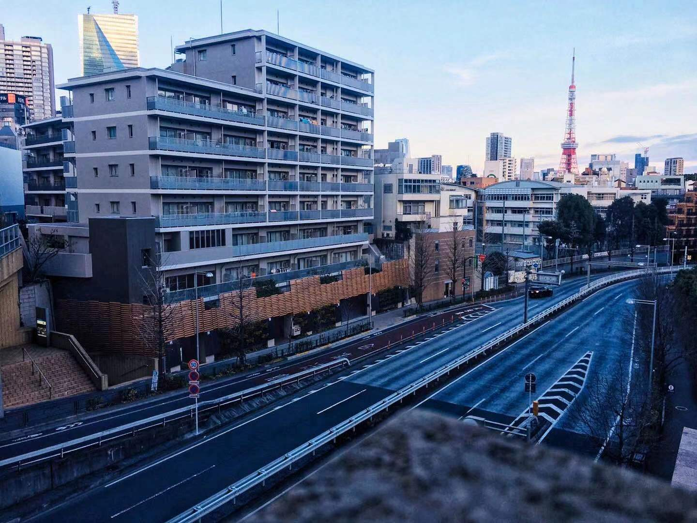
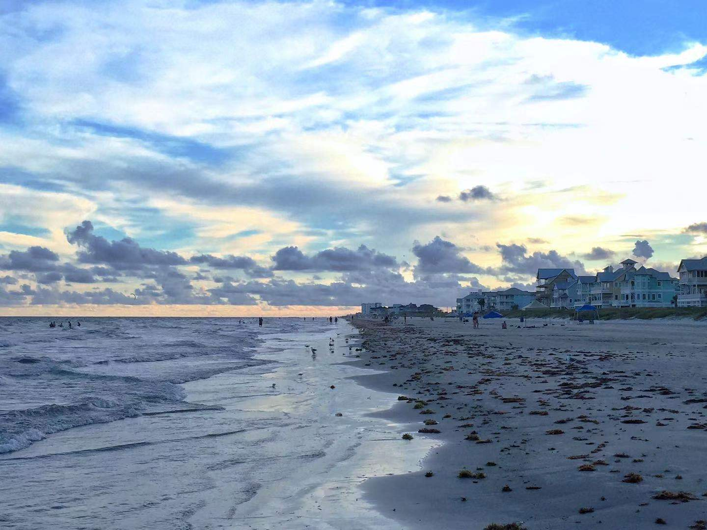

I am a Taiwanese who studied in an international high school in China, and now I am pursuing a computer engineering degree at Texas A&M University and will graduate by the summer of 2022. With the opportunity to experience lifestyles in different countries, I become a cosmopolitan who is open-minded to other cultures and perspectives. Therefore, when I am working as a part of the group, besides individual accountability, I believe empathy and compassion are also the keys to promote team productivity. My favorite motto is "A circuit needs all parts to be functional for the light bulb to work".
In my spare time, I pursue habits that allows me to focus and capture the subtle moments in this dynamic world.
Photograph of Tokyo Tower, tokyo, japan
I am fascinated with the architectures and culture in Japan, which motivate me to learn my third language: Japanese.
Sketch of determination
Photograph of Galveston shore line, Galveston, Texas, US
I lived in Galveston for a year when I was a freshman, its coastal lifestyle relaxes me often.